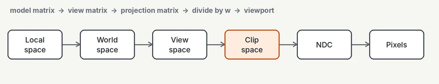

Getting Started
Review#
That was the hard part. You can open a view, push vertices through a pipeline, texture them, move them with matrices, and fly a camera through the result. Everything from here on builds on these pieces.
The frame, one more time#
func draw(in view: MTKView) {
guard let passDescriptor = view.currentRenderPassDescriptor,
let drawable = view.currentDrawable,
let commandBuffer = commandQueue.makeCommandBuffer(),
let encoder = commandBuffer.makeRenderCommandEncoder(descriptor: passDescriptor) else { return }
encoder.setRenderPipelineState(pipelineState)
encoder.setDepthStencilState(depthState)
encoder.setVertexBuffer(vertexBuffer, offset: 0, index: 0)
encoder.setVertexBytes(&uniforms, length: MemoryLayout<Uniforms>.stride, index: 1)
encoder.setFragmentTexture(texture, index: 0)
encoder.setFragmentSamplerState(samplerState, index: 0)
encoder.drawPrimitives(type: .triangle, vertexStart: 0, vertexCount: 36)
encoder.endEncoding()
commandBuffer.present(drawable)
commandBuffer.commit()
}
If you can explain every line of this function, you are ready for lighting.

Glossary#
- Device (
MTLDevice): the GPU, and the factory for all other Metal objects. - Command queue / command buffer: the queue orders work; a buffer holds the encoded commands of one frame.
- Render pass: a sequence of draws into one set of attachment textures, described by an
MTLRenderPassDescriptorwith load and store actions. - Render command encoder: records state changes and draw calls for one pass.
- Drawable: the texture that will be presented on screen this frame.
- Vertex function: runs per vertex, outputs a clip-space position.
- Fragment function: runs per covered pixel, outputs a color.
- Render pipeline state: compiled shaders plus vertex layout and attachment formats. Expensive to create, cheap to use.
- Vertex descriptor: maps bytes in vertex buffers to shader attributes.
- Buffer (
MTLBuffer): raw memory visible to the GPU. - Uniforms: per-draw constants passed to shaders in a buffer.
- Texture / sampler state: image data, and the rules for reading it.
- Mipmaps: pre-shrunk copies of a texture for distant surfaces.
- Model / view / projection matrices: local to world, world to camera, camera to clip space.
- NDC: x and y from -1 to 1, z from 0 to 1 in Metal.
- Depth buffer: per-pixel record of the nearest surface, used to hide what is behind.
- Delta time: seconds since the previous frame.
Conventions used from here on#
| Thing | Convention |
|---|---|
| World | Right-handed, +y up, camera looks down -z |
| Angles | Radians in matrices, degrees in the camera class |
| Vertex buffer slot 0 | Vertex data |
| Vertex buffer slot 1 | Per-draw uniforms |
| Fragment buffer slot 1 | Fragment uniforms (lights, materials) |
| Triangle winding | Counter-clockwise is the front |
Common first mistakes#
- Black or empty view:
view.devicenot set, or the delegate was deallocated because nothing holds the renderer. - Pipeline creation fails: pixel formats in the pipeline descriptor do not match the view, or a function name is misspelled.
- Garbage uniforms: Swift and MSL struct layouts differ, or
.sizewas used where.stridewas needed. - Upside-down textures: OpenGL-style texture coordinates.
- Geometry vanishing close to the camera: an OpenGL projection matrix with a -1 to 1 depth range.
- Nothing drawn and no error: the model is behind the camera, outside the near and far planes, or the depth compare function rejects everything.
Read validation messages carefully. Metal's are precise and nearly always name the exact property that is wrong.